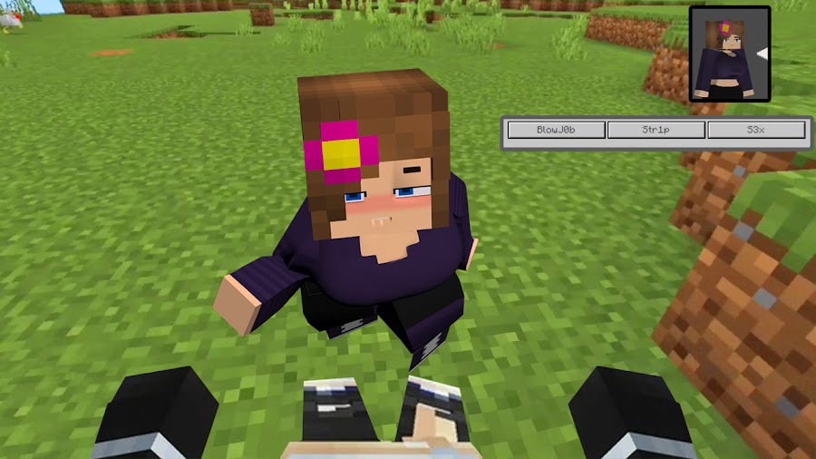

Jenny Comes Alive
This mod is designed to enhance your experience by adding new features, improving functionality, and offering unique customization options. Easy to use and install, it integrates easily with your existing setup. If you're here you probably know what the mod is about 😳
Download NowInstallation
1. Download the zip file
2. Right click on desktop and extract all
3. Open README.txt and read instructions
4. Have fun and enjoy :)
Mod was made by xBella02 and Ericachu! (if you like the mod pls donate to our pateron!)
FAQ
How do i run the mod commands?
When loading into the game, make sure you have operator permissions and being able to run commands. Once you have OP in the server run /setup and you will get all the customization options aswell as selecting players
How do i get the bed?
Once you have the setup complete, run the command "/give {Player Name} JCA:funbed " and you will get a placeable instance of the bed compatible with the animations.
Why doesn't anything show up after clicking on the mod?
When you download the folder, unlock it with the access key, make sure to unzip the executable and run the file. After a couple of minutes of nothing happening, a Minecraft Launcher instance will pop up. Please be patient Mojang servers are slow :3
How do i do a threesome?
If you want to access the Threesome Animations you have to run the /threesome Command. When you run the command a GUI will pop up where you need to select your gender and you can invite the attendees if you're initiating it. If you get invited to a threesome you have to click on Accept and then select your gender!
What is SmartScreen?
SmartScreen is a windows application that warns the user that they're running an executable that's not widely downloaded, the mod is completely safe to use and it does work if you follow all of the instructions. If you run into any issues open a ticket in the discord and some of our Admins can help you out < 3 To get past SmartScreen click on More Info then Run Anyway and the mod installation process should start!